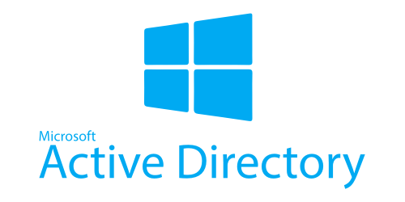

Best platform to learn AD compromising (HTB\THM)
Why I am writing this blog?
The main reason I’m writing this blog is to share with you my personal experience in learning Active-Directory pentesting which I needed to learn in order to build my C2-framework.
That’s why this blog intended to guide you to gain great knowledge while saving huge amount of time, and that’s by covering the following points:
- • Active Directory
- • Mistakes have done before learning
- • TryHackMe Module
- • HackTheBox Academy & its module
- • Simple comparison
- • Which platform to choose
Active Directory
A directory service for Windows enterprise environments. It is a distributed, hierarchical structure that allows for centralized management of an organization’s resources, including users, computers, groups, network devices and file shares, group policies, devices, and trusts.
The purpose of Active Directory is to enable organizations to keep their network secure and organized without having to use up excessive IT resources. For example, with AD, network administrators don’t have to manually update every change to the hierarchy or objects on every computer on the network. They simply do it once in Active Directory. It’s also necessary for managing security authentication.
Mistakes have been done before learning
Depending on the good experience with TryHackMe Rooms, by which I have learned some good stuff in Linux& Windows fundamentals & Priv-Esc and a lot of CTF machines. I jumped into AD module in THM without doing any research or checking main topics in the AD pentesting. That wasted quite a bit of time
TryHackMe Module
After I had finished the AD-Pentesting module in THM, I was in a discussion with an experienced mentor about AD pentesting to find out that all what I learned is a very basic narrow scope compared to real required experience in AD pentesting in assessments. Then he recommended HTB-Academy which he had with it a great experience with AD & web pentesting and others.
HackTheBox Academy & its module
-
• HackTheBox Hack The Box is a massive, online cybersecurity training platform, allowing individuals, companies, universities and all kinds of organizations around the world to level up their hacking skills.
• HTB Academy is a real ‘University for Hackers,’ which is learning users step-by-step the cybersecurity theory All the way from guided to exploratory learning, learn how to hack and develop the hacking mindset that will enable you to assess and create secure systems.
• Once I had started in AD-Pentesting module, I was surprised with the organized content. It has a powerful detailed content with heavy real life scenarios, great defensive considerations understanding, clear vision & powerful methodology, wide scope for every attack or Enum step (from Linux & Windows and different privileges consideration), final Labs to application these knowledge, and simple & clear explanation methods.
Simple comparison
- • Here’s a simple comparison between some points to clarify the idea:
| content specs | HTB | THM |
|---|---|---|
| depth | deeper content & topics with wide scope | basic narrow scope compared to real experience |
| reality | supported with real scenarios & assessments examples | weak examples & scenarios |
| duration | 7-Days to one-Month | 7-Days to one-Month |
| Methodology | clear & strong Methodology | very weak & unclear Methodology |
| scope | introduces you with basic attacks concepts, then put you in different attacking environments based on real life scenarios, like: attacking from linux or windows machine, domain-joined or not , with tools or restricted in downloads and so on | Almost all attacks are restricted in a narrow scenario with a specific tool |
• Some important topics aren't
covered in THM:- ○ External Recon
- ○ Some initial Enumeration techniques (with creds & without)
- ○ Living off the land (some tight Enum scenarios)
- ○ Hardening Active Directory
- ○ Additional AD Auditing Techniques
- ○ Big overview assessment
Which platform to choose
I would really recommend to start AD pentesting with HTB-Academy and don’t waste time with it in THM if you are looking for deeper understanding and even faster learning.